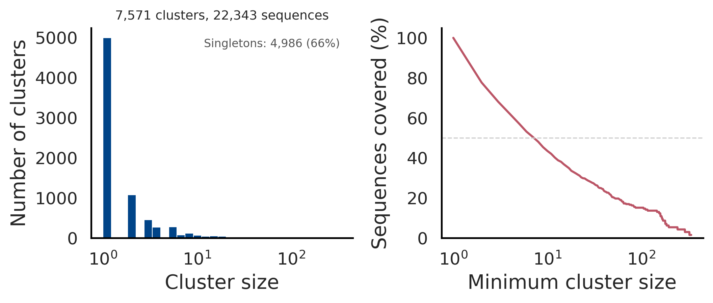

Advanced usage
ClustKIT clusters protein sequences through a six-phase pipeline: MinHash sketching, LSH candidate generation, banded Smith-Waterman alignment, similarity graph construction, Leiden community detection, and representative selection. Many aspects of this pipeline can be tuned via command-line options.
General usage
clustkit -i <input.fasta> -o <output_dir> [options]
Identity threshold
The -t / --threshold option sets the sequence identity threshold (0.0-1.0).
Pairs with identity below this threshold are excluded from the similarity graph.
# cluster at 30% identity (low-identity regime)
clustkit -i proteins.fasta -o output/ -t 0.3
# cluster at 90% identity (high-identity regime)
clustkit -i proteins.fasta -o output/ -t 0.9
Default: 0.9
Clustering mode
The --clustering-mode option provides threshold-aware presets that automatically
configure sketch size, LSH sensitivity, and other internal parameters.
balanced– Good accuracy/speed trade-off (default)accurate– Maximum sensitivity, slowerfast– Speed-optimized, lower sensitivity at low thresholds
clustkit -i proteins.fasta -o output/ -t 0.3 --clustering-mode accurate
Default: balanced
Clustering method
The --cluster-method option selects how the similarity graph is partitioned into clusters.
leiden– Leiden community detection (default). Optimizes a global modularity objective. Produces well-connected clusters, especially at low identity thresholds.connected– Connected components. Every pair of sequences above threshold in the same component becomes one cluster. Fast but may merge distinct families.greedy– Greedy centroid-based clustering. Processes sequences by descending degree; each unassigned high-degree node claims its unassigned neighbors.
# Leiden community detection (default, recommended)
clustkit -i proteins.fasta -o output/ -t 0.5 --cluster-method leiden
# Connected components
clustkit -i proteins.fasta -o output/ -t 0.7 --cluster-method connected
# Greedy centroid-based
clustkit -i proteins.fasta -o output/ -t 0.7 --cluster-method greedy
Default: leiden
Alignment method
The --alignment option controls how pairwise similarity is computed.
align– Banded Smith-Waterman alignment with BLOSUM62 scoring and affine gap penalties. Accurate, especially at low identity thresholds. This is the default.kmer– K-mer overlap scoring. Faster but less accurate below ~50% identity.
# Smith-Waterman alignment (default, accurate)
clustkit -i proteins.fasta -o output/ -t 0.3 --alignment align
# K-mer scoring (fast)
clustkit -i proteins.fasta -o output/ -t 0.7 --alignment kmer
Default: align
Threads
The --threads option controls the number of CPU threads used for alignment.
clustkit -i proteins.fasta -o output/ -t 0.5 --threads 8
Default: 1
GPU acceleration
The --device option enables GPU-accelerated Smith-Waterman alignment using CuPy.
This requires the clustkit[gpu] installation.
cpu– CPU only (default)auto– Benchmark a sample to pick the fastest device0,1, … – Specific GPU device ID
# Use first GPU
clustkit -i proteins.fasta -o output/ -t 0.3 --device 0
# Auto-detect fastest device
clustkit -i proteins.fasta -o output/ -t 0.3 --device auto
Default: cpu
LSH sensitivity
The --sensitivity option overrides the LSH sensitivity set by --clustering-mode.
Higher sensitivity finds more candidate pairs but is slower.
low– Fewer candidates, fastermedium– Balancedhigh– More candidates, slower
clustkit -i proteins.fasta -o output/ -t 0.3 --sensitivity high
Default: set by --clustering-mode
Sketch size
The --sketch-size option sets the number of MinHash signatures per sequence.
Larger sketches improve candidate recall but increase memory usage. Overrides the
value set by --clustering-mode.
clustkit -i proteins.fasta -o output/ --sketch-size 256
Default: set by --clustering-mode
K-mer size
The -k / --kmer-size option sets the k-mer length for MinHash sketching.
clustkit -i proteins.fasta -o output/ -k 3
Default: 5
Representative selection
The --representative option controls how a representative sequence is chosen for each cluster.
longest– Longest sequence in the cluster (default)centroid– Sequence with highest average similarity to other cluster membersmost_connected– Sequence with the most edges in the similarity graph
clustkit -i proteins.fasta -o output/ --representative centroid
Default: longest
Output format
The --format option controls the output format.
tsv– Tab-separated file with columns: sequence_id, cluster_id, is_representative (default)cdhit– CD-HIT-style.clstrformat for compatibility with existing pipelines
clustkit -i proteins.fasta -o output/ --format cdhit
Default: tsv
Plot output
The --plot flag generates a two-panel cluster size distribution figure
saved as cluster_size_distribution.png in the output directory.
clustkit -i proteins.fasta -o output/ -t 0.5 --threads 8 --plot
{kind=link}

The left panel shows a histogram of cluster sizes (log-scaled x-axis) with the singleton count annotated. The right panel shows cumulative sequence coverage: the fraction of sequences in clusters of at least a given size. Together, these panels provide a quick sanity check of clustering granularity.
All options
Option |
Description |
Default |
|---|---|---|
|
Input FASTA/FASTQ file |
required |
|
Output directory |
required |
|
Identity threshold (0.0-1.0) |
0.9 |
|
Number of CPU threads |
1 |
|
|
|
|
|
|
|
|
|
|
|
|
|
LSH sensitivity: |
per mode |
|
MinHash sketch size |
128 |
|
K-mer size for sketching |
5 |
|
|
|
|
Output format: |
|
|
Generate cluster size distribution plot |
off |